Aditya Kaul
Data Science & Analytics

English Premier League Form Meter
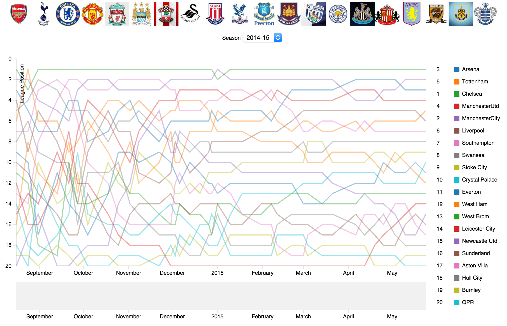
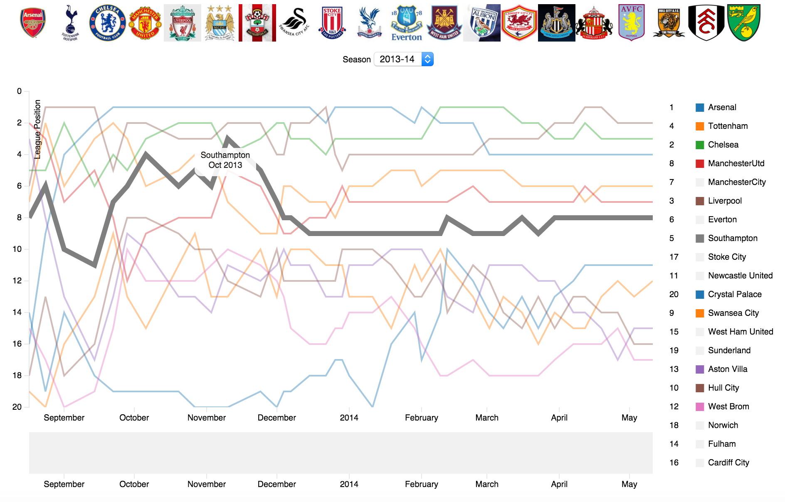
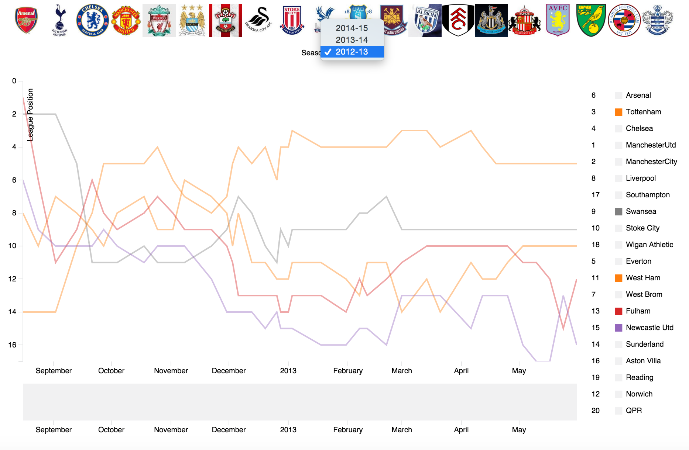
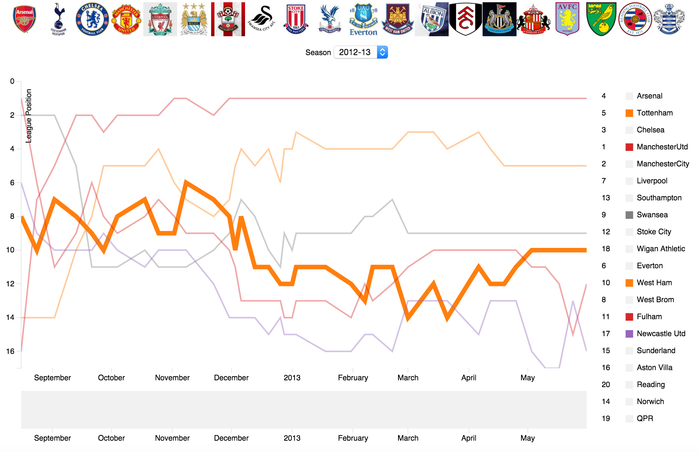
- Created a visualization in D3 to view the form of all the teams in the Barclay's Premier League for the seasons 2012-2013, 2013-2014 and 2014-2015
- The visualization shares a multi series line chart where each line is used to represent a different team
- The spikes in the line chart indicate the position of the team at the end of each game week among the twenty contenders
- The user can use the position of the teams after each gameweek or for a certain month to visualize the form and how the team fared over the entire season
- In order to track the performance of a single team the user can hover over the line chart of desired team to view the performance after each match in the selected season
- On clicking the legend of the selected team we can add/remove the team form line from the visualization and can consider the teams that have their forms represented by darker lines
- A slider box is provided at the bottom to allow brushing in order to enable users to dive deeper into the details and perform analysis for a shorter duration
- The club emblems are given at the top of the page which change as per the season, replacing the three relegated teams with newly promoted teams from the championships
- The club emblems are also linked to the official websites of the teams allowing the user to research more about a specific team in detail
- On hovering over the line, the line darkens hence giving us a better view of the form and a tooltip shows up that provides us with the name of the team, month and the year of that instance on the line graph
Visualizing Team Statistics in the Barclays Premier League
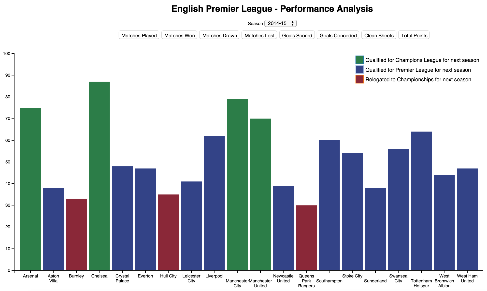

- Created a visualization in D3 to view the performance and statistics of all the teams in the premier league for the season 2014-2015
- Important statistics such as Total Points, Matches Won, Matches Lost, Goals Scored, Goals Conceded were visualized via a bar chart
- To further aid the user, a tooltip has been added which displays all the statistics as well as the team name and emblem for easy reference
- A color legend was used to display the top teams that made it into next years Champions League, the teams that survived relegation but performed ordinarily and the teams that have been relegated to the first division league
- By clicking the buttons to view the different statistics a smooth transitioning has been implemented to make the visualization more appealing to the user
Visualizing Top Strikers, Midfielders and Keepers in World Football
- Created a visualization in D3 to view the performance and statistics of strikers, midfielders and keepers for the past four seasons
- The stacked bar plot gives us the ability to visualize the players with the highest statistics
- To enable the user to view details of each player per season we can view the statistics as grouped rather than stacked
- A tooltip gives us additional information, such as, the player name, season details and the numerical value of the statistic concerned
- If we want to view the details of only a few selcted seasons we can achieve that by unchecking the seasons that we do not wish to view
- The Y-Axis recales automatically based on the highest value for a specific statistic that we are viewing
Visualizing the Statewide Impact of a Revenue - Neutral Carbon Tax

- Created a visualization in D3 to view the impact of a proposed carbon tax policy for the state of Washington
- Created an interactive map for the state of Washington segregated by different counties
- Enabled the zoom feature on the map to ensure that the user could view the smaller counties easily and enhanced interactivity
- Implemented a tool tip to give the user additional information on hovering over the map, histogram or the bubble chart
- Used color encoding to indicate how different counties would be financially affected with change in household financial impact variable
- Created a histogram to represent the financial change in sampled households for a selected household financial impact variable
- Implemented interactivity between the map and histogram to represent the financial change for the selected county on the map
- Introduced filtering via brushing technique to provide more relevant data to users interested in specific details from the map and histogram
- Implemented a bubble chart that gave the financial change for all the variables as well as a break down by income or area
Exploratory Analysis of USA State Data
- Performed exploratory data analysis using the state data in the R state package
- Created different maps to show all the variables that we wanted to explore
- Used color as the encoding to show the spread of the variables across the US and compared the colors for different maps to find correlation between the variables
- To delve deeper into the analysis we created a scatter plot matrix that helped in comparing all the variables to each other
- Found a correlation between the variables using the map, looked more closely at the relation in the scatter plot matrix further enhanced by a regression line
- We considered one example of the analysis and found a correlation between the illiteracy rate and the murder rate in different states in the US
New York City Flights Data
- Performed exploratory data analysis using the flights data concentrating on the departure delay in the flights in the year 2013
- Created a scatterplot to find the worst day to fly out of NYC which turned out to be March 8, 2013
- Created a multi panel line plot to find a trend in departure delay as per different seasons and found out that the highest delays were during the summer months, specifically June and July
- Created a dot plot to visualize how the departure delays vary over the course of a day
- Merged the weather and flights data frames in order to find a correlation between the mean departure delay and different weather variables
- Merged the planes and flights data frames, created multi panel scatter plots to find how departure delay was affected with increase in the size of the plane for different plane manufacturers
Seattle Police Department 911 Incident Response
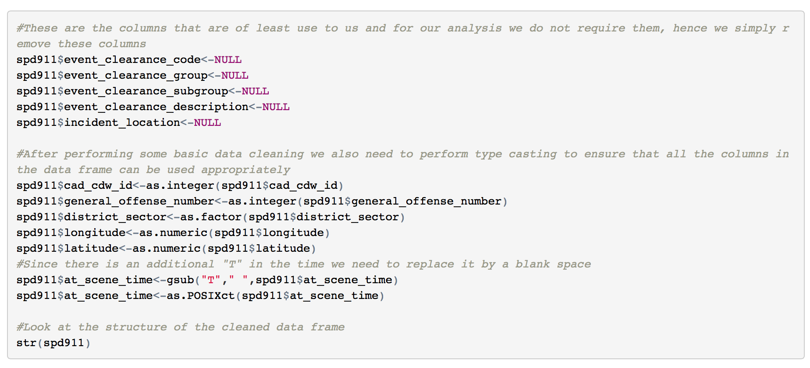
- Performed exploratory data analysis using 911 report data on Socrata
- Created a map using ggmap in R to represent the locations where the 911 calls were made from(assumption:same as the location where the crime occurred)
- The idea behind this representation is to find any patterns of crimes being committed in Seattle
- To delve deeper into the analysis we have broken down the large data set into smaller subsets based on district sectors
- The histograms are a representation of the different crimes being committed in each sector which further divided into zone beats encoded using color
- The analysis is intended to be an exploratory analysis and we have assumed that the location coordinates for the 911 calls is the same or in the vicinity of where the crime was committed
Goals and Assists of Players in Top European Domestic Leagues
- Created a Tableau dashboard to visualize the attacking statistics of players in the top four european leagues namely - English Premier League, La Liga, Bundesliga and Serie A
- Enables the user to analyze the performance of players to find out the top attacking players and their strengths such as assists, goals or both
- Players from different leagues are color encoded to compare performance of players in the different leagues
- Drill down ability provided through which players of any number of leagues can be visualized
- Through parameter control, the number of assists can be changed to produce detailed information about a specific group of players
- Size of the bubbles helps us differentiate between players with differnt assists
- By leveraging a tool tip the user can obtain more information about a specific player
- The highlighting feature is active which enables the user to selectively view only a specific set of players in order to delve deep into the analysis
Hollywood Movie Ratings and Earnings
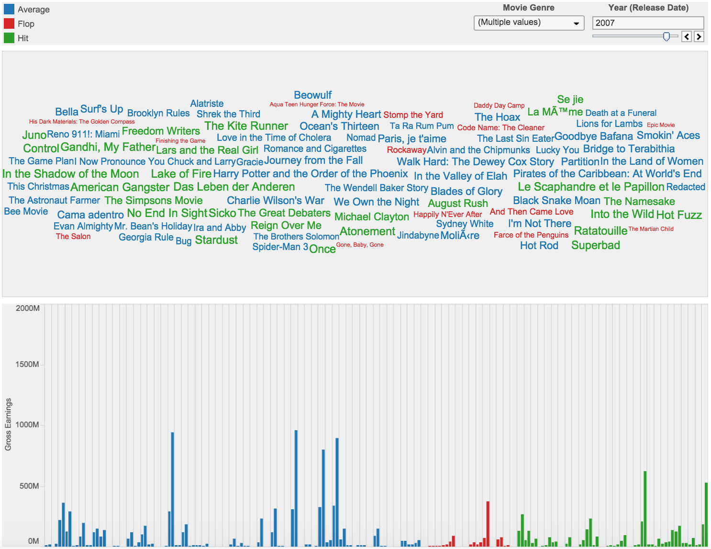
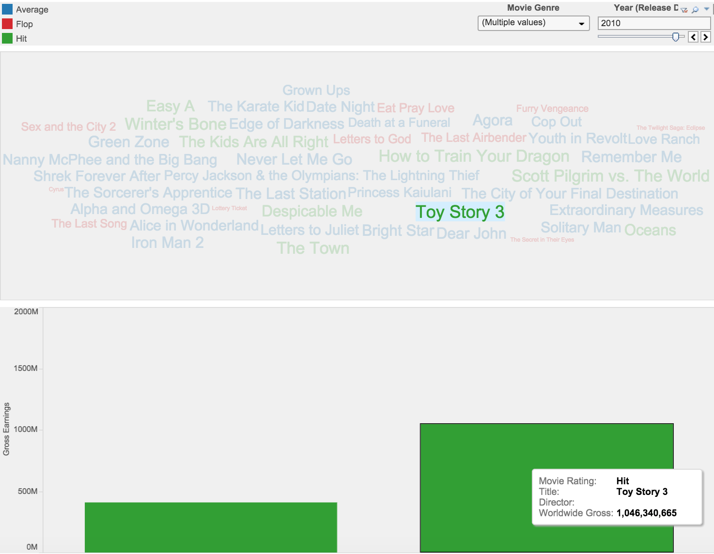
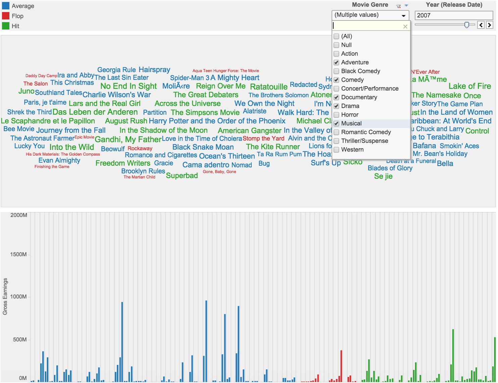
- Created a visualization in Tableau to visualize movies released in Hollywood from 1905 to 2010
- Used a word cloud to show the different movies released in a particular year which was in turn controlled by a slider
- The success of a movie is based on the IMDB rating indicated by the color coding and the gross earnings, US and Worldwide indicated by bar charts
- By using Tableau's action and highlight feature a user can get detailed information about a particular movie or a group of movies
- The drop down list provides the user with the option of selecting specific genre's of movies that the user is concerned about
- The tool tip provides detailed information about the word cloud or the bar chart by hovering over them
Predicted Increase in Obese Population in New York City
- Performed predictive analysis to generate a linear regression model in order to understand the trend of obese population in NYC from 2008 to 2040
- Created a D3 visualization to show the increase in the total population and obese population with each passing year using a slider
- Created a map for the city of NYC showing the five boroughs
- Implemented the zoom and drag feature on the map to enable the user to zoom into a specific borough or drag a specific borough into the view
- Created two bubble charts to show the change in population in each borough
- The two bubble charts increase/decrease in size with the increase/decrease in population which is in turn controlled by the slider
- Implemented color encoding to ensure that the user finds it easy to relate the boroughs on the map to the appropriate bubbles on the bubble charts
- Created a Tableau dashboard to support above concept of increase in obese and total population in New York City from 2008 to 2040
- Created a Tableau dashboard to show the 10 major causes of death in the United States wherein four of these diseases were more likely to be caused by obesity
Burtin's Antibiotic Data
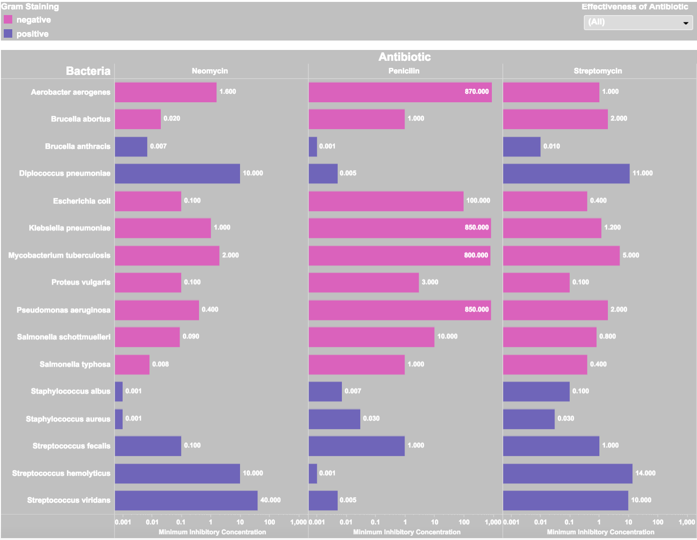
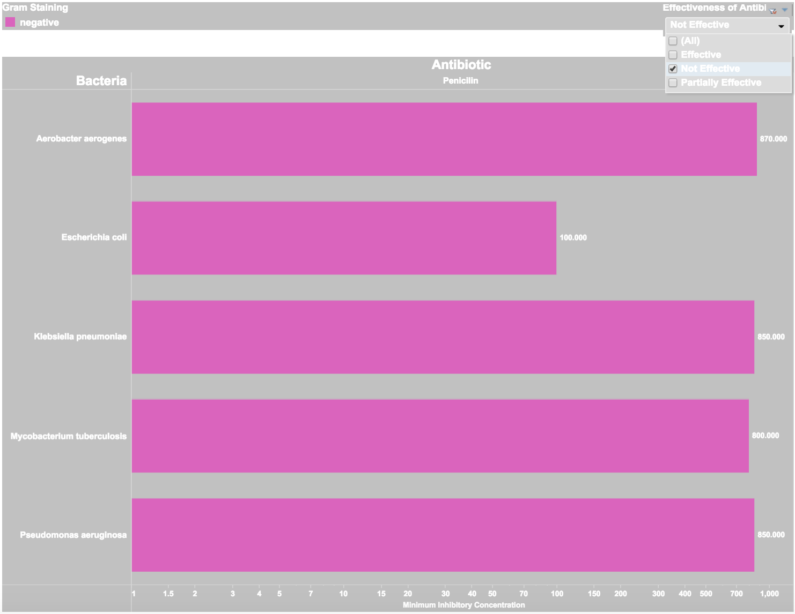
- Created a visualization in Tableau for Burtin's antibiotic dataset in order to understand the relation between different strands of bacteria and the effect of antibiotics on them
- The color encoding of the different bars are used to indicate the bacteria which are gram positive and as a result are stained purple whereas the bacteria which are gram negative do not retain their purple stain and are counter-stained pink
- Through the drop down menu the user can further study the effectiveness of each antibiotic on the different bacteria
- Through the use of a logarithmic scale we can see the MIC value of each antibiotic required to treat the different bacteria
- It is important to note that the lower the concentration required the better the antibiotic in it's effectiveness
- Through a tool tip we get more detailed and compact information which can help us summarize the effectiveness of the antibiotic